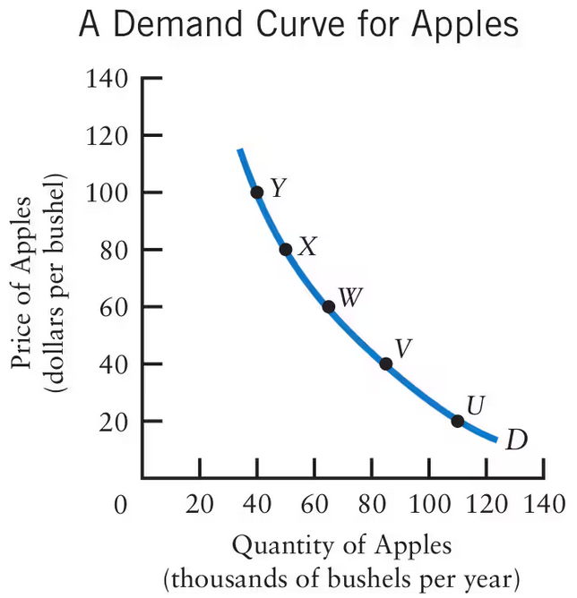
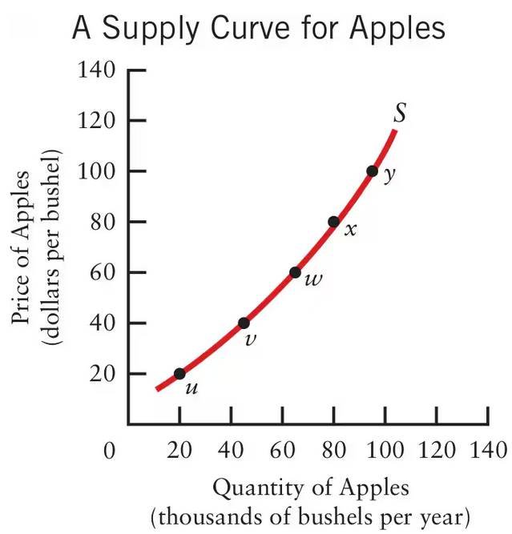
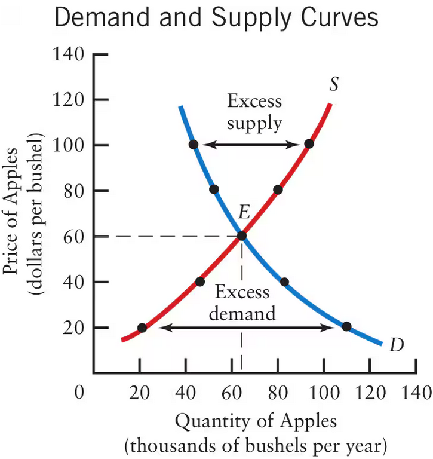

Chapter 3 Notes: Supply and Demand 101
Table of Contents
- Section 3.1 Demand
- Desired Quantity: “The amount that consumers want to purchase when faced with a particular price of the product, other products’ prices, their incomes, and everything else that might matter”
- Quantity bought or Quantity Exchanges: The actual amount that people purchase
- Quantity demanded || Flow of Purchases: the derivative of quantity bought, kind of
- How do we check for how each variable changes a product? Ceteris Paribus
- Flow vs Stock
- Demand curve bullshit
- Shifts versus movements
- 3.2 Supply
- 3.3 The Determination of Price
- Ultimate Takeaways
Section 3.1 Demand
- The goal of this chapter is to determine pricing. This involves understanding how prices react to higher supply or freak events
Desired Quantity: “The amount that consumers want to purchase when faced with a particular price of the product, other products’ prices, their incomes, and everything else that might matter”
In my own words, this is just how much people want to cop based on literally everything in their lives
- This is what I don’t like about economics. This statistic seems impossible to calculate and completely usesless, since it’s purely theoretical.
- I guess you could use it to understand the general ballpark of where to price something, and collecting the data would be as simple as asking a bunch of people what they would be willing to pay for something. The variance in what they say is indicitive of everyone having a different financial situations. Not a terrible stat, makes sense
Quantity bought or Quantity Exchanges: The actual amount that people purchase
- This makes that other stat even better. This actually makes a lot of sense now. It’s just want people want versus what people actually buy. What a retarded field filled with jargon to explain simple concepts (unlike cs lmao)
Quantity demanded || Flow of Purchases: the derivative of quantity bought, kind of
Basically how much shit is purchased in a given period. It’s less of the derivative, and more the slope a secant line, where the change in x between the two points is a certain… (realized I was speaking out my ass lmao) <- this is actually correct, I just got misled by the textbook. I documented my thought process below
THIS IS WRONG, BUT I KEPT IT: I misunderstood the statistic. It is not a derivative, it cannot be negative. It is actually the integral of quanitity bought over a given period of time. It is the amount purchased in a given time, not the rate at which people purchase shit, which would be the integral. The value cannot be negative
WAIT, I WAS RIGHT. FLOW CAN BE NEGATIVE, AND IS EQUAL TO THE DERIVATIVE. THE TEXTBOOK JUST SUCKS ASS. Flow variables can totally be negative, it’s just the rate at which anything happens.
How do we check for how each variable changes a product? Ceteris Paribus
Which means treat every other feature as if they were constant
- Why not use partial derivatives? You could just take the partial derivative of one variable with respect to the total value, but whatever
Flow vs Stock
Flow is a rate and stock is a scalar value. Flow is the derivative (or slope of a secant line) of quanitity bought, desired quantity, or any other statistic. Meanwhile, stock is the integral. It is a scalar value (of course, this doesn’t extend to the graphs of the flow of flow variables, or second derviatives, because the integral will be another flow variable, so I guess it would be the double integral)
Demand curve bullshit
You read a demand curve the way you read a graph mind blown. When it shifts to the right, it means demand went up. This is called phase shift (thank you mr. schillaci). When it shifts to the left, demand has gone down. This is very intuative when you look at a demand graph, which is shown below. 
The 5 important causes of shifts in the demand curve:
- consumers’ income
- prices of other good
- we call products that fill gaps because they are cheaper “subistitutes in consumption”
- products that rely on each other also affect the demand for each other. These are called “complements in consumption.” An example can be cars and gasoline, or weed and rolling papers, or alcohol, cocaine, cigarettes, and prositutes.
- Consumers’ preferences
- Population
- more jits means more demand
- Significant changes in weather
Shifts versus movements
People can have a higher demand for something and still buy less, it’s just a matter of shifting the demand curve itself versus moving the point by adusting the price. If people want more of something, the demand curve shifts. If the price of something rises (y axis), the amount that buy goes down, even if they want it.
3.2 Supply
Quantity Supplied
- the amount that the seller wants to sell within a given time; basically just the desired quantity but for the supplier
- However, this is a flow variable. It is how much they want to sell in a given time. This is because buying something is
Quantity Sold or Quantity Exchanged
- This is the amount that they actually sell
Supply curve bullshit
- A single point on the supply curve represents the price of a given product given the quantity. It has a upward slope and is concave down, representing how the change in quantity raises the price, but price differences become larger and larger given smaller and smaller changes as the cost of production gets too high, since they are creating so many of the product.

6 possible causes of shifts in the supply curve
- Prices of inputs
- How much it costs to actually create something
- Technology
- New tech removes a lot of the inputs and lowers the cost of production, in turn increasing the margins of the product and encouraging the company to product more
- Government taxes and subsidies
- Anything that increases a firms’ costs will automatically shift the curve to the left (meaning the price gets more expensive for a given quantity produced)
- Prices of other Products
- Significant changes in weather
- Number of suppliers
3.3 The Determination of Price
What is a market?
- Initially a market was an actual market, like Pike place. Now, a market is just a situation where buyers and sellers negotiate the exchange of goods or services
- A perfectly competitve market is a market so big and efficient that one single person doesn’t hold any “appreciable influence” on the market pricing
Market Equilibruim
- Where the supply and demand curve meet. This is the price of any given item, along with how much will be produced
- below is the a graph showing the market equilibrium:

- As you can see, there is only one spot where demand and supply intersect, meaning the price perfectly encapsulates how much the producer and demander want to sell or buy, respectively. This means that if the price is 100$, only 40 thousand apples will be bought, but 80 thousand will be produced. This effectively means that there is a surplus of 40k apples. Inversely, if the price is 20 dollars, then the producer will only produce 20k apples, while the demander would be willing to buy a little more than 100k apples. This means there are 80k apples that could have been purchased, but weren’t because the price is too low for it to be worthwhile to the producer.
- There are two terms to use here. The first is excess demand causes upward pressure on price. This means that if there is more demand than supply, the price will go up. The other is that excess supply causes downward pressure on price. This means that if there is more supply than demand, the price will drop.
Mathmatical Example
\[ Q^D = 100 - 3p \] \[ Q^S = 20 + 2p \] Set \( Q^D = Q^S \):
\[ 100 - 3p = 20 + 2p \]
Solve for \( p \):
\[ p = 16 \]
Substitute \( p = 16 \) to find the equilibrium quantity \( Q \):
\[ Q = 52 \]
Comparative statics
- This is the process of taking one equilibrium and changing one of the exogenous variables to study how the equilibrium price changes. There are 4 possible changes in the graph: supply right or left, demand right or left. Anything moving up is literally just prices rising for no reason, and going down is price lowering for no reason.
- What are the effects of these 4 changes? Question for when you come back (i know the answer right now lol)
Ultimate Takeaways
Important vocab, compiled
VOCAB Flow Variable
- Definition: A variable that represents a rate at which something happens. Basically a variable with respect to time (kinda like the derviative)
- Example: the change in the demand within a given month
VOCAB Stock Variable
- Definition: A scalar value, a variable that doesn’t vary or depend on time
- Example: the amount of money someone has a given time
VOCAB Ceteris Paribus
- Definition: All other things considered as constant
- Example: We are understanding how the demand of a product changes with the price, ceteris paribus.
VOCAB Desired Quantity
- Definition: “The amount that consumers want to purchase when faced with a particular price of the product, other products’ prices, their incomes, and everything else that might matter” (stock variable)
- Example: How much weed I want to buy right now, even if I won’t actually buy that much
VOCAB Quantity Demanded
- Definition: the amount of a certain product purchased over a given period of time (flow variable)
- Example: how much people that buy coco puffs in a given week
VOCAB Quantity Supplied
- Definition: The amount that the seller wants to sell in a given period (flow variable)
- Example: How many bottles of mouthwash rite aid wants to sell in a two month period
VOCAB Quantity Sold or Quantity Exchnaged
- Definition: How much the seller will actually sell (also flow variable)
- Example: How many bottles of lean my plug sells in 3 months
VOCAB Market
- Definition: A system where consumers and producers negotiate the exchange goods and services
- Example: The pencil market, where buyers buy pencils and other sellers sell pencils
VOCAB Equilibrium
- Definition: Where the supply and demand curve meet, representing the price that optimizes the amount produced and the amount purchased such that there is no surplus or
- Example: See this section
VOCAB Exogenous
- Definition: Independent variable
- Example: The variables that effect supply and demand shifts
VOCAB Endogenous
- Definition: Dependent variables
- Example: Equilibrium price and quanitity
VOCAB Abosolute Price
- Definition: the price of something as a scalar value, simple as that
- Example: A gram costs 10$
VOCAB Relative Price
- Definition: The ratio of two absolute prices, conveying how a price changes relative to another price
- Example: How the price of carrots changes based on the price of other veggies
What I learned
- I don’t nessicarily think I learned that much, but I more reinforced what I already knew. I think I have a much more robust understanding of supply and demand, and I’ve learned a lot of economic jargon that I will need for the test. I felt a lot less efficient today, and I want to streamline my economic notes more.